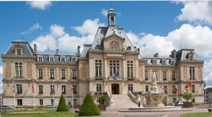
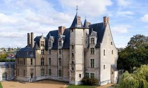
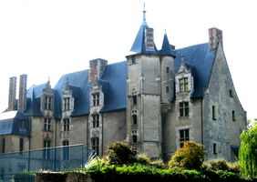
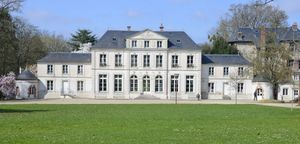
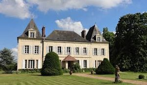

Recensement Jean-Claude Truffet
| Département | 27 — Eure |
| Canton | Evreux |
| Commune | Evreux |
| Type d'édifice | Château |
| Période d'origine | XV-XVIII |
| Coordonnées GPS | 49° 01' 37" Nord, 1° 09' 05" Est Palais grav-2-3 GPS : 49° 01' 26" Nord, 1° 09' 03" Est Navare Grav-5 GPS : 49° 01' 06" Nord, 1° 07' 29" Est Trangis grav-4 GPS : 49° 03' 31" Nord, 1° 08' 56" Est |





EVREUX, Hôtel de Ville, la construction date de la fin du XIXe siècle, à l'emplacement de l'ancien château des comtes d'Évreux. C'est grâce au legs d'Olivier Delhomme (1794-1874), conseiller municipal, de 1830 à 1870, que l'édifice a été érigé entre 1889 et 1895 par les architectes Thierry Ladrange et Georges Gossart. Le plafond de la salle des mariages a été décoré par Charles Denet. Notre mairie correspond bien aux goûts artistiques de la période économique florissante de la fin du XIXe siècle, avec lintroduction du vitrail civil dans les bâtiments publics, de style néo-classique, la volonté des architectes était de faire de l'Hôtel de Ville d'Evreux, un véritable palais dédié à la République.
NAVARE, le bâtiment date du XVIIIe siècle. C'est plus une gentilhommière entourée d'un beau parc, qui fut agrandie, au cours du XIXe siècle, qualifiée de château. Le petit château de Navarre a été inscrit aux M.H. depuis le 3/10/2018, il est durant l'été 2019, en cours de démolition pour réaliser un parking, à l'initiative de son propriétaire. TRANGIS, il fut construit, avant 1750, sur les restes d'une construction du XVIIe siècle, par Le Cousturier de Pithienville, lieutenant criminel du Présidial. Il passa le 13/06/1750 dans les mains du duc de Bouillon, Godefroy de la Tour d'Auvergne, comte d'Evreux et propriétaire du château de Navarre. Il devint ensuite la propriété, avant la Révolution, de Michel Le Cousturier de Courcy. Il est acquis en 1861 par Ferdinand Goldschmidt, banquier, membre d'une des principales familles de la haute finance européenne au XIXe siècle.
EVREUX, le palais Episcopal d'Evreux ou château des Evêques. Sa construction date du XVe au XVIIIe siècle. Cet ancien évêché et ses dépendances ont été transformés en Musée. La Mairie en est devenue propriétaire. Le Palais épiscopal d'Evreux est classé aux M.H. depuis 1907. Installé au pied de la cathédrale dans un ancien palais médiéval classé M.H, le musée dArt, histoire et archéologie vous offre une expérience de visite unique. Ce bâtiment à la silhouette singulière abrite le musée depuis les années 1960. Ses différentes façades témoignent de lart de bâtir à travers les âges. Construit à proximité immédiate de la cathédrale pour accueillir les évêques dÉvreux à la fin du Moyen Age, lédifice na cessé dêtre modifié jusquau 20e siècle. À lintérieur de cet ancien palais, au fil de ses quatre niveaux, vous découvrirez les salles historiques décorées de cheminées monumentales, lescalier à vis qui vous mènera au chemin de ronde vous plongeant dans un cadre totalement immersif. TRANGIS, le château de Trangis resta, plus d'un siècle, parmi ses descendants. En 1981, son arrière petit fils Guillaume Guindey, haut fonctionnaire, membre de l'Institut, le revendit à la ville d'Évreux. Le parc du château de Trangis constitue aujourd'hui un espace vert ouvert aux visiteurs, avec un parcours d'accrobranches. Le Parc du Château de Trangis est accessible au Public depuis 1981.
Evreux; Olivier Delhomme Trangis Guillaume Guindey,
"
Evreux Hotel de ville grav 1- GPS : 49° 01' 37" Nord, 1° 09' 05" Est Palais grav-2-3 GPS : 49° 01' 26" Nord, 1° 09' 03" Est Navare Grav-5 GPS : 49° 01' 06" Nord, 1° 07' 29" Est Trangis grav-4 GPS : 49° 03' 31" Nord, 1° 08' 56" Est